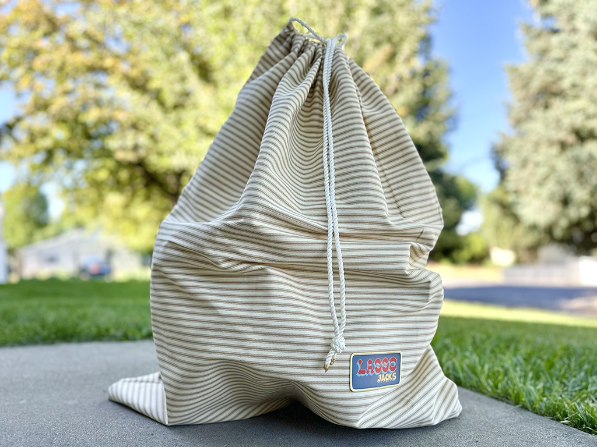

LASSO JACKS the yard game
Have you ever thought to yourself, "Man, I really wish that I had a yard game where I could Lasso Giant wooden jacks!" Well look no further because you just landed on lassojacks seconday(unoffical) website.
Have you ever thought to yourself, "Man, I really wish that I had a yard game where I could Lasso Giant wooden jacks!" Well look no further because you just landed on lassojacks seconday(unoffical) website.

Be the first to capture the winning number of jacks with your lasso.
Winning number of Jacks
Wanna buy a set to play with Friends?
Visit our actual websiteHERE
